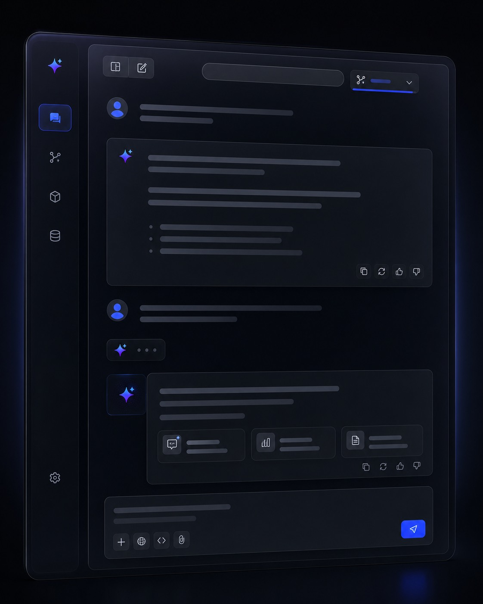
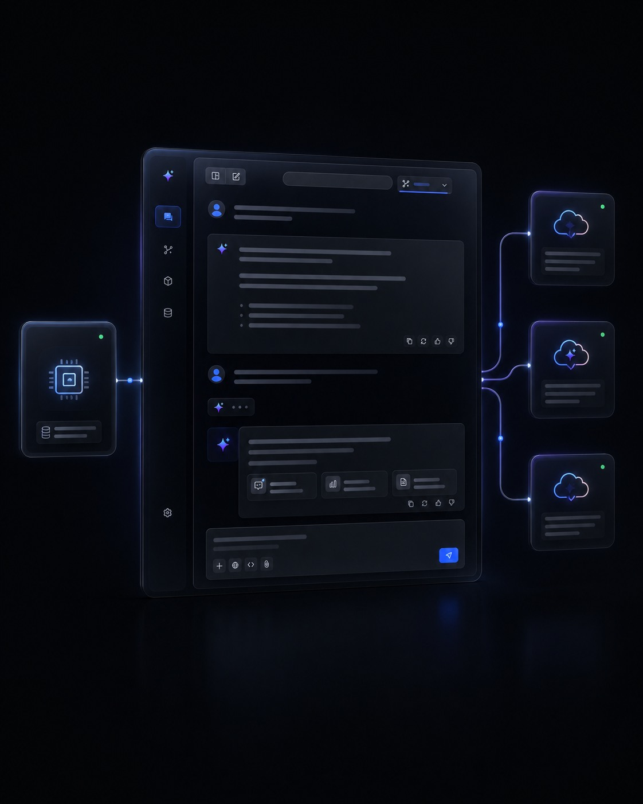
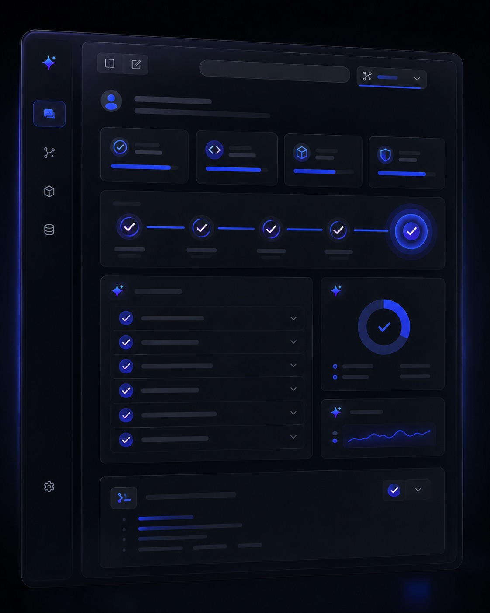
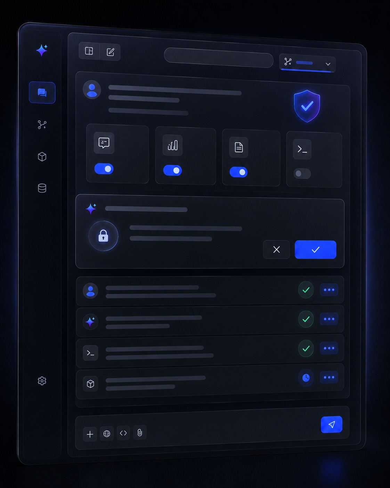
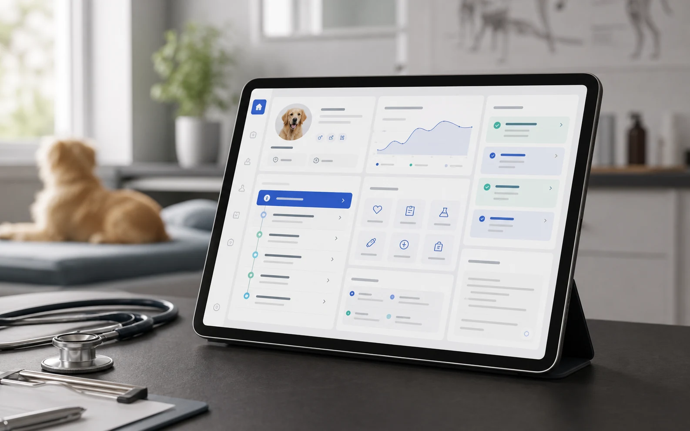
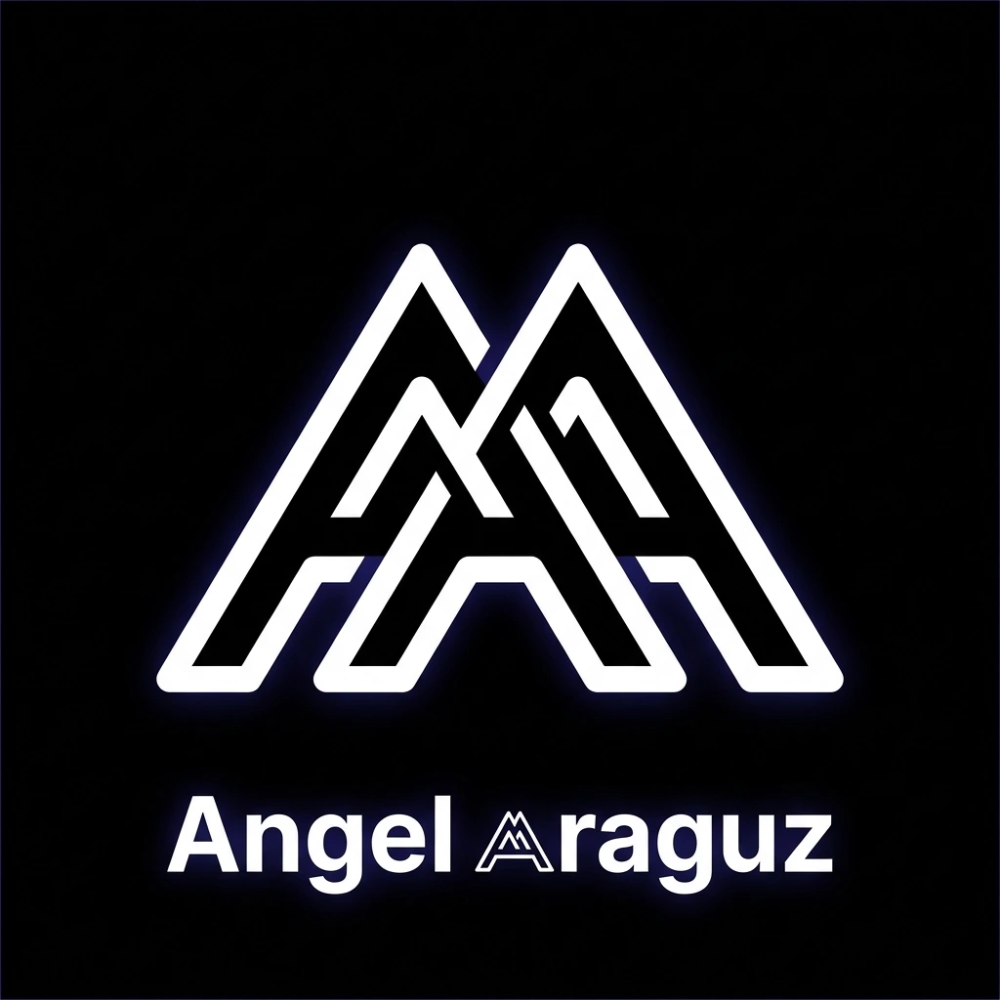

Prospectos que se pierden
Llegan por redes o WhatsApp y nadie les da seguimiento a tiempo.
Registro en CRM, asignación y recordatorios.
Growth · Technology · AI Automation
Angel Araguz · Marketing, software e IA para empresas
Ayudo a empresas a conseguir y atender mejor a sus prospectos, mejorar su presencia digital y reducir tareas repetitivas con marketing, software, integraciones e IA aplicada a procesos concretos.
PRINCIPIO / 001
¿Te suena familiar?
Los problemas más comunes en empresas que ya venden, pero todavía operan de forma manual.
Llegan por redes o WhatsApp y nadie les da seguimiento a tiempo.
Registro en CRM, asignación y recordatorios.
Ventas y operación viven en archivos distintos y nadie tiene la versión correcta.
Información centralizada en Odoo o en un CRM.
Capturas, reportes y respuestas que consumen horas cada semana.
Flujos automatizados para tareas administrativas.
Cada sistema funciona por separado y la misma información se captura dos veces.
Integraciones mediante APIs entre tus herramientas.
Hay sitio o redes activas, pero no se sabe qué genera contactos.
Landing pages, formularios, SEO y analítica.
Saber cómo van las ventas o la operación requiere pedir y juntar reportes.
Paneles y reportes útiles para dirección.
Servicios
Atraer al prospecto, registrarlo y darle seguimiento sin capturas duplicadas. La diferencia aparece cuando las tres áreas resuelven el mismo problema de negocio.
Generar demanda
Ordenar la operación
Reducir trabajo manual
Cada implementación se define según tus procesos, plataformas y permisos disponibles. También ofrezco consultoría en transformación digital, estrategia tecnológica y adopción de IA.
Para quién
Trabajo con empresas de 10 a 100 personas que necesitan mejorar la captación y el seguimiento de clientes, ordenar su operación o conectar herramientas que hoy funcionan por separado. Hablo directamente con dueños, directores y gerentes de ventas u operación.
Tu operación depende de Excel, WhatsApp y seguimiento manual.
Primer paso
Reviso cómo tu empresa atrae clientes, da seguimiento a sus prospectos, utiliza sus herramientas y qué tareas se siguen haciendo a mano.
Qué recibes30 minutos para entender tu negocio, tu equipo y tus prioridades.
Procesos comerciales, herramientas actuales y tareas manuales.
Ordenadas por impacto posible, dificultad y urgencia.
Alcance definido y forma de medir el resultado.
Lo que busca cada proyecto
Cada propuesta define qué se implementará y cómo se medirá el resultado.
Inteligencia aplicada
Antes de elegir herramientas, entiendo a las personas, los datos, las restricciones y el comportamiento esperado. Así puedo construir algo útil, medible y preparado para operar en el mundo real.
Objetivos, usuarios, riesgos y criterios de éxito claros desde el inicio.
Arquitecturas mantenibles e interfaces que reducen fricción.
APIs, automatizaciones y datos integrados en flujos coherentes.
Pruebas y revisión continua para que la solución funcione de verdad.
Experiencia que respalda
Proyectos reales y experimentales que respaldan cada línea de servicio: digitalización, integraciones, automatización e IA aplicada.
01 · Proyecto experimental
Laboratorio de IA aplicada · AURA y AURA4
Trabajo experimental con asistentes de IA, integración de modelos locales y en la nube, herramientas, permisos de ejecución y pruebas. Es la base técnica de la línea de IA, no un producto comercial.




Construida con React y Tauri para reunir conversación, herramientas y controles en un solo espacio.
OpenAI, Codex y Ollama funcionan detrás de una capa común de proveedores y rutas configurables.
Límites de proveedor, ejecución controlada y rutas de respaldo mantienen las acciones bajo supervisión.
Pruebas unitarias, de integración, linting y validación de compilación forman parte de cada experimento.
02 · Sistemas empresariales
Digitalización y operaciones
Soluciones para procesos comerciales y operativos: integraciones con Odoo, herramientas de captura de pedidos, aplicaciones web y automatización alrededor del trabajo diario.
Experiencia práctica en digitalización empresarial.
Visitar Rapyvet
03 · Desarrollo de producto
Plataforma de gestión clínica
Aplicación web responsiva para organizar pacientes, expedientes, citas y seguimientos clínicos sin perder contexto entre tareas.
Información organizada · Flujos claros · Experiencia adaptable a cada pantalla
Visitar VetFlow04 · Ingeniería de calidad
Automatización de pruebas sobre recorridos reales de usuario: interfaz, pagos, tráfico de red, respuestas del sistema y validaciones de punta a punta.
Cómo trabajo
Alineo el objetivo, el contexto, las dependencias y lo que significa que el proyecto tenga éxito.
Convierto el problema en flujos claros, decisiones técnicas y una experiencia fácil de entender.
Implemento por capas, conecto sistemas y uso IA donde genera valor real.
Pruebo, observo, corrijo y documento para entregar una solución confiable.
Quién está detrás
Soy Angel Araguz. Atiendo cada proyecto de forma directa: del diagnóstico a la implementación, las pruebas y el soporte.
Independiente
Crecimiento digital, desarrollo de software, integraciones con APIs y Odoo, automatización de procesos, IA aplicada y aseguramiento de calidad para empresas.
Apple
Consultoría técnica, diagnóstico, análisis de necesidades, capacitación de equipos, transferencia de conocimiento y mejora continua.
Herramientas
Python · TypeScript · JavaScript · SQL · HTML · CSS
React · FastAPI · Tauri · Vite · REST APIs · Vercel
OpenAI · Codex · ChatGPT · Ollama · Agentes · Modelos locales
Pytest · Selenium · Vitest · Postman · Odoo · GitHub · Jira

Contacto
Solicita un Diagnóstico Digital + IA y revisemos juntos qué conviene mejorar primero en tu empresa.
Para preparar la conversación, cuéntame tu giro, el tamaño de tu equipo y qué proceso te quita más tiempo hoy.